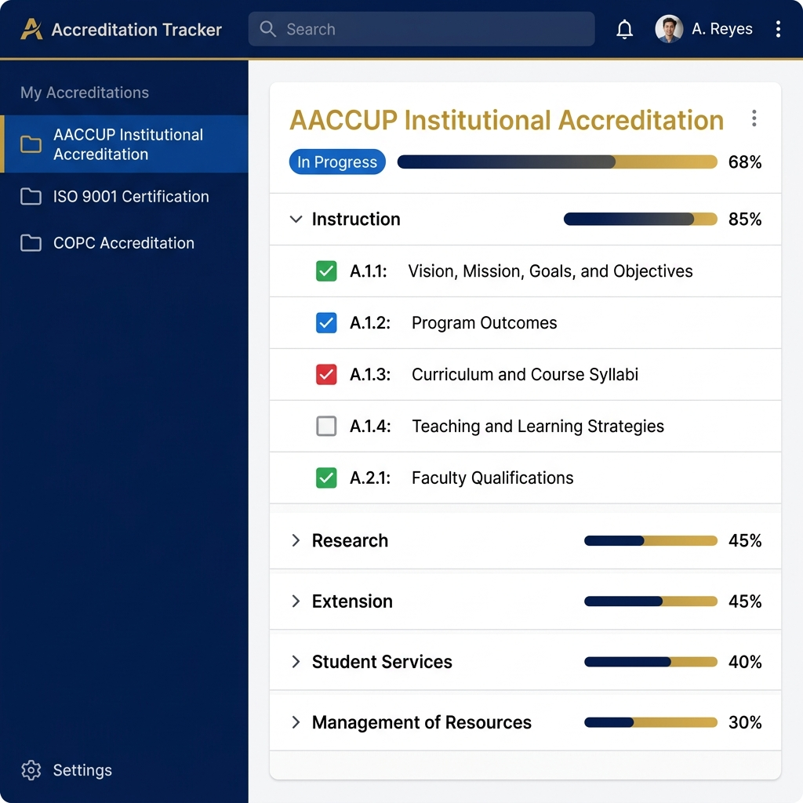
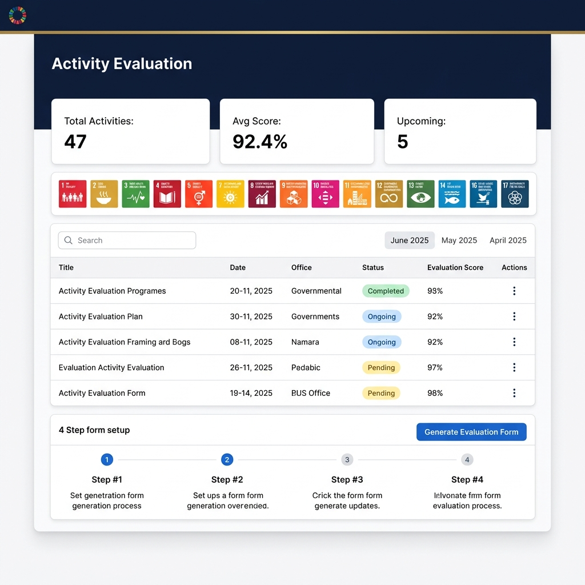
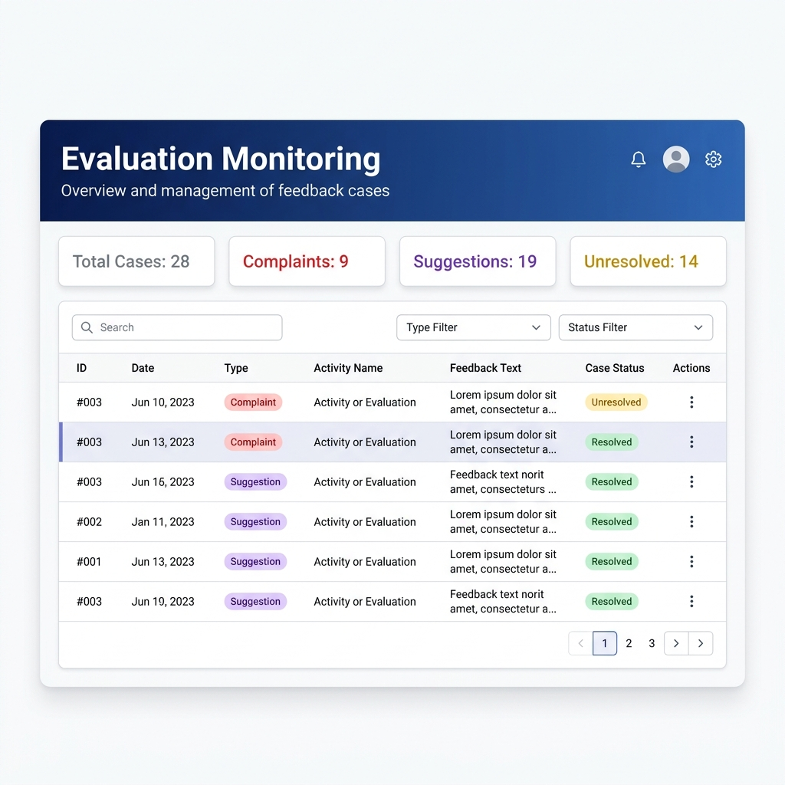
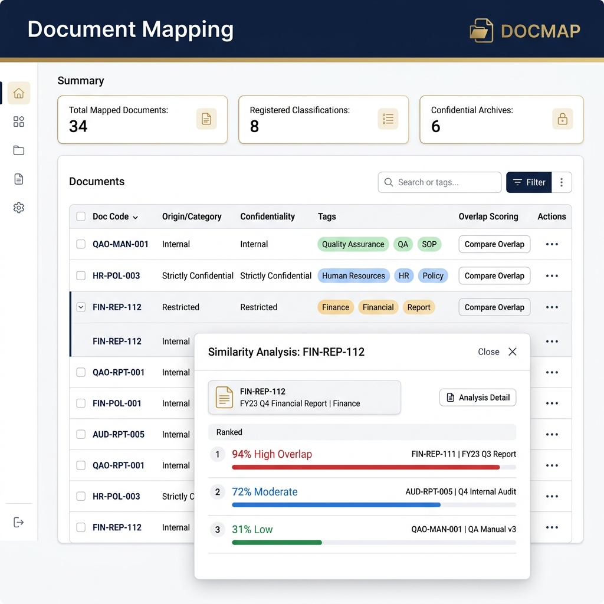

1 Getting Started
How to log in, complete your profile, and navigate the system.
Logging In
Profile Completion
On first login, you must complete your profile before accessing any module. Fill in:
- Full Name — First and last name
- Division / Office — Your home office or department
- Address — Province, City/Municipality, Barangay (auto-populated from PSGC)
Click Save Profile when done to unlock all modules.
Navigation
| Menu Item | Description |
|---|---|
| Activities | Manage institutional activities and their evaluations |
| Accreditation | Track compliance and upload proof documents |
| Documents | Register documents, check similarity, view linkages |
2 Accreditation File Archiving & Document Uploading
Manage accreditation standards, upload proof documents for compliance requirements, and track overall submission progress with real-time progress bars.

Figure 1 — The Accreditation Tracker: left sidebar shows all accreditations; the main panel shows categories, requirements, and compliance checkboxes.
2.1 Accreditation Masterlist
Navigate to Accreditation → Masterlist to see all registered standards.
| Column | Description |
|---|---|
| Code | Short identifier, e.g., AACCUP-IA |
| Name | Full name of the accreditation standard |
| Deadline | Target compliance date |
| Progress Bar | Visual showing approved requirements out of total |
| Status | In Progress Completed Inactive |
Adding a New Accreditation (QAO Staff only)
Importing from Excel (QAO Staff only)
Click the green ↓ Import button to bulk-register requirements from an Excel template. Supported formats: AACCUP Institutional, AACCUP Program, SUC, COPC.
2.2 The Accreditation Tracker
Navigate to Accreditation → Tracker or click an accreditation from the Masterlist. This is your primary workspace for file archiving and compliance tracking.
Requirement Status Legend
Each category heading displays a mini progress bar (e.g., 65% · 13/20). Click any category to expand or collapse its requirements.
2.3 Submitting Proof Documents
Figure 2 — Proof submission panel: upload a file or paste a Google Drive link, view existing submissions and their approval status.
2.4 Reviewing & Approving Submissions (QAO Staff only)
Once all proofs for a requirement are approved, its checkbox turns Green ✓ automatically.
2.5 Managing Categories & Requirements (QAO Staff only)
From the ⋮ main action menu (top-right of the main panel):
| Action | Description |
|---|---|
| Change Status | Update the accreditation's overall status |
| Add Category | Create a new top-level area (e.g., "Instruction") |
| Add Requirement | Add a specific evidence item under a category |
| Edit Accreditation | Update title, description, or code |
| Delete Accreditation | ⚠️ Permanently removes all data |
From each category's ⋮ menu you can also Add Sub-category, Add Requirement, Edit Category, or Delete.
3 Activity Evaluation Form Generation & Results Gathering
Register institutional activities, auto-generate Google Form evaluations, sync participant responses, and view statistical results with AI-powered qualitative analysis.

Figure 3 — Activity Evaluation Dashboard: stat cards, SDG icon grid, monthly tabs, and activities table with evaluation scores.
3.1 Activities List
Navigate to Activities. The page shows:
| Element | Description |
|---|---|
| Stat Cards | Total Activities · Avg Evaluation Score · Upcoming Events |
| SDG Dashboard | 17 UN SDG icons — colored if linked to activities, grey if not |
| Month Tabs | Filter activities by month (e.g., June 2025) |
| Search Bar | Search by title, description, or facilitator name |
| Position / Office Filters | Cascading filter: pick a position level first, then a specific office |
Adding a New Activity
Archiving an Activity
Open the ⋮ menu on an activity row → Archive. Archived activities move to Archived Activities and no longer appear in the main list but retain all evaluation data.
3.2 Activity Detail Page
Click any activity title to open its detail view containing: activity metadata, facilitators, target participants, SDG linkages, links & resources, and the Evaluation & Statistics section.
3.3 Generating an Evaluation Form
Form Setup Checklist
| Step | Action |
|---|---|
| Step 1 | Verify form was generated successfully |
| Step 2 | Send form link to participants |
| Step 3 | Monitor response collection |
| Step 4 | Mark evaluation as complete |
3.4 Evaluation Statistics & AI Analysis
After responses are synced, the Evaluation & Statistics section shows:
| Element | Description |
|---|---|
| Status Card | Completed Overdue Pending |
| Date Released | When the form was distributed |
| Deadline | Response cutoff (shown in red if past due) |
| Quantitative Stats | Average scores per criterion, response count, response rate |
| AI Interpretation | Automatically categorizes open-ended suggestions and complaints into themes |
| Justification Letter | Collapsible panel with formal justification text if applicable |
Click Download PDF to export the full activity report as a printable PDF.
3.5 Evaluation Monitoring

Figure 4 — Evaluation Monitoring Dashboard: tracks individual complaints and suggestions with case status and action logging.
Navigate to Activities → Monitoring. This dashboard tracks individual complaints and suggestions gathered from evaluation responses.
Summary Stats
| Column | Description |
|---|---|
| ID | Unique case reference number |
| Date | When the feedback was recorded |
| Type | Complaint or Suggestion |
| Activity Name | Activity that generated this feedback |
| Feedback | Preview of participant's comment (truncated) |
| Case Status | Unresolved or Resolved |
Click ⋮ → Details to open the full case page, log actions taken, and mark the case as Resolved.
3.6 Exporting Activity Reports
Click Export Report (top-right of the Activities page) and choose from four export types:
| Report Type | Description |
|---|---|
| All Activities (Full History) | Every activity in the system as Excel |
| All Activities (Date Range) | Activities within a specified start and end date |
| Office Performance (Monthly) | All activities from a specific office in a selected month |
| Office Performance (Date Range) | All activities from a specific office within a date range |
Click Download Excel to generate the report file.
4 Document Registry, Similarity Checking & Accreditation Linkages
Maintain an institutional document registry, detect overlapping documents using AI-powered similarity scoring, and link documents directly to accreditation proof requirements.

Figure 5 — Document Mapping page: registry table with confidentiality badges, tags, and the Overlap Scoring comparison modal.
4.1 Registering a Document
Navigate to Documents → Document Mapping, then click + Add Document.
QAO-MAN-2024-01.Confidentiality Levels
| Level | Label | Use Case |
|---|---|---|
| 1 | Public | Freely shareable |
| 2 | Internal | For all institutional staff |
| 3 | Restricted | Limited to specific divisions |
| 4 | Confidential | Management and above |
| 5 | Strictly Confidential | Executive / legal use only |
4.2 Document Similarity Checking (Overlap Scoring)
Click the Compare Overlap button on any document row to run an AI-assisted similarity analysis.
The system compares tags, category, office of origin, and purpose text against all other documents, then returns a ranked similarity score:
| Score Range | Interpretation | Action |
|---|---|---|
| 80–100% | High overlap — possible duplicate | Consider consolidating |
| 50–79% | Moderate overlap — related documents | Review scope differences |
| 20–49% | Low overlap — similar theme | No action needed |
| 0–19% | Minimal overlap — distinct documents | No action needed |
4.3 Accreditation Linkages
Navigate to Documents → Accreditation Linkages to see all institutional documents formally linked to at least one accreditation proof requirement.
Filtering the Linkage Table
| Filter | Description |
|---|---|
| Search Bar | Search by doc code, office, category, or accreditation name |
| Accreditation Filter | Show only documents linked to a specific accreditation |
| Office Filter | Show only documents from a specific office |
Click View on any row to open the Document Linkage Details modal, showing:
- Full document metadata
- Every accreditation requirement this document is linked to
- A Goto button that jumps directly to that requirement in the Accreditation Tracker
5 User Roles & Permissions
QAO staff have elevated permissions automatically detected by their registered office assignment.
| Feature | Regular Staff | QAO Staff |
|---|---|---|
| View accreditation tracker | ✓ | ✓ |
| Submit proof documents | ✓ | ✓ |
| Approve / Return submissions | — | ✓ |
| Add / Edit / Delete accreditations | — | ✓ |
| Manage categories & requirements | — | ✓ |
| Link documents to requirements | — | ✓ |
| View & add activities | ✓ | ✓ |
| Generate evaluation forms | ✓ | ✓ |
| View evaluation statistics | ✓ | ✓ |
| View document registry | ✓ | ✓ |
| Register / Edit documents | ✓ | ✓ |
| Run similarity checks | ✓ | ✓ |
6 Frequently Asked Questions
Common questions and quick answers for all users.
My submission was "Returned" — what do I do?
Open the requirement, read the reviewer's remark in the proof card, upload a corrected version, and resubmit.
The evaluation form generation is stuck or failed.
Check your internet connection and try again. If the issue persists, the Google Apps Script webhook may need reconfiguration. Contact your system administrator.
New form responses aren't showing in the system.
Open the activity detail page → click Activity Evaluation Form → select Force Sync Responses.
Can I use the same document as proof for multiple accreditations?
Yes. Register the document once in the Document Registry, then link it to any number of requirements across different accreditations through the Accreditation Tracker's Manage Proofs feature.
How is the similarity score calculated?
The system compares tags, document category, office of origin, and purpose text between documents. Documents sharing more attributes receive higher overlap scores.
What happens if I delete an accreditation?
⚠️ Deleting an accreditation permanently removes all of its categories, requirements, and submitted proofs. This cannot be undone. Always confirm with QAO leadership first.